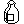
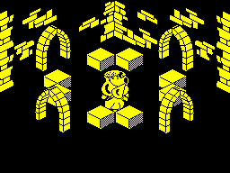

The quest in Knight Lore is to bring the wizard fourteen charms, in the order he asks for them, and drop each into his cauldron. This page follows a charm from where the game puts it at the start to the end of the game.
Eight kinds, 32 places
The special-object table at special_objs_tbl has 32 entries of nine bytes: the type (0 once the object has left the world), where it starts -- x, y, z and room -- and where it is now, in the same order. The places are fixed; what lies in each is not. At the start of every game init_special_objects deals the kinds in rotation from a starting kind taken from the seed at $5BA0 plus the refresh register: entry n gets type 96 + ((start + n) AND 7). So neighbouring entries hold neighbouring kinds and each of the eight appears four times, but which place gets which changes from game to game. The 32 places are in 32 different rooms.
Types 96 to 102 are the seven charms the wizard wants; 103 is an extra life.
Charm 0, type 96: as it lies in a room, and in its colour on the panel (attribute $42).
Charm 1, type 97: as it lies in a room, and in its colour on the panel (attribute $43).
Charm 2, type 98: as it lies in a room, and in its colour on the panel (attribute $44).
Charm 3, type 99: as it lies in a room, and in its colour on the panel (attribute $45).
Charm 4, type 100: as it lies in a room, and in its colour on the panel (attribute $46).

Charm 5, type 101: as it lies in a room, and in its colour on the panel (attribute $47).
Charm 6, type 102: as it lies in a room, and in its colour on the panel (attribute $42).
The extra life, type 103.
One deal -- the one the game made when a simulator ran its set-up for these pages:
| Entry | Room | x | y | z | What lies there |
|---|---|---|---|---|---|
| 0 | $6D | 136 | 128 | 164 | 103: extra life |
| 1 | $27 | 128 | 128 | 140 | 96: charm 0 |
| 2 | $D0 | 136 | 120 | 176 | 97: charm 1 |
| 3 | $0A | 120 | 136 | 128 | 98: charm 2 |
| 4 | $BA | 120 | 136 | 128 | 99: charm 3 |
| 5 | $42 | 136 | 120 | 176 | 100: charm 4 |
| 6 | $8D | 136 | 184 | 188 | 101: charm 5 |
| 7 | $FF | 168 | 168 | 128 | 102: charm 6 |
| 8 | $87 | 128 | 128 | 128 | 103: extra life |
| 9 | $F3 | 120 | 184 | 128 | 96: charm 0 |
| 10 | $A8 | 168 | 104 | 176 | 97: charm 1 |
| 11 | $D2 | 184 | 72 | 176 | 98: charm 2 |
| 12 | $00 | 72 | 72 | 128 | 99: charm 3 |
| 13 | $22 | 136 | 184 | 128 | 100: charm 4 |
| 14 | $7A | 184 | 184 | 176 | 101: charm 5 |
| 15 | $F9 | 184 | 184 | 128 | 102: charm 6 |
| 16 | $D6 | 136 | 152 | 176 | 103: extra life |
| 17 | $E8 | 120 | 136 | 176 | 96: charm 0 |
| 18 | $F6 | 120 | 120 | 176 | 97: charm 1 |
| 19 | $0F | 136 | 120 | 140 | 98: charm 2 |
| 20 | $6F | 184 | 184 | 128 | 99: charm 3 |
| 21 | $FD | 72 | 184 | 164 | 100: charm 4 |
| 22 | $08 | 120 | 120 | 176 | 101: charm 5 |
| 23 | $BB | 136 | 136 | 164 | 102: charm 6 |
| 24 | $DF | 120 | 120 | 176 | 103: extra life |
| 25 | $5E | 128 | 128 | 128 | 96: charm 0 |
| 26 | $B4 | 120 | 136 | 176 | 97: charm 1 |
| 27 | $04 | 120 | 120 | 176 | 98: charm 2 |
| 28 | $74 | 72 | 184 | 128 | 99: charm 3 |
| 29 | $40 | 128 | 128 | 128 | 100: charm 4 |
| 30 | $38 | 104 | 120 | 176 | 101: charm 5 |
| 31 | $F0 | 72 | 184 | 152 | 102: charm 6 |
In a room
The charms are not in the room records. On entering a room, find_special_objs_here looks through the table for objects whose current room is this one and builds a record for each in records 2 and 3 ($5C48 and $5C68): 5 by 5 by 12, with the flags $14 (draw it; it can be pushed), and the address of its table entry at +$10. On leaving, update_special_objs writes each one's position back through that address, so a charm stays where it was pushed or dropped. A charm lying in a room (upd_96_to_102) falls under gravity, and when it has just been dropped or has moved it is stopped and redrawn with a click. Those two records are all there is for special objects, and in the wizard's room record 3 is taken by the cauldron's bubbles (init_cauldron_bubbles).
Carrying
Up to three charms are carried, in four-byte slots at $5BD8: slot 0 for staging, never shown, and slots 1 to 3, drawn on the panel from left to right (display_objects) in the colours at object_attributes. A slot keeps the charm's type, its flags and the address of its table entry. They form a queue: the first picked up is the first put down.
One press of pick up / drop does one thing (handle_pickup_drop), and only when the player is inside the room's walls, not jumping and standing on something:
- Picking up comes first. A charm counts as touching if it overlaps the player's box enlarged by 4 in width, depth and height and lowered by 4 (is_on_or_near_obj), so one under his feet or beside him will do. pickup_object puts it in slot 0, zeroes the type in its table entry -- so leaving the room will not put it back -- and wipes its record. Then adjust_carried moves the slots along. With three already carried, the oldest is put down where the new one was, in the same record: picking up swaps.
- Dropping happens when there is nothing to pick up and one of the two records is free -- in the wizard's room only record 2 (find_free_record). room_to_drop puts the oldest charm, in slot 3, at the player's x, y and z, and lifts both of his records by 12, a charm's height, so that he ends up standing on it: that is how charms become steps. It is refused if anything lies within 12 units above his head ($5BD3, found with do_any_objs_intersect before the drop), since he would be lifted into it. If slot 3 is empty the slots just move along, bringing the next charm to the front.
The extra life (upd_103) is never carried: touching it -- the player's box widened by 1 -- adds a life, clears its table entry and makes it vanish.
What the wizard wants
The order is the fourteen bytes at objects_required: the kinds 0 to 6 (a charm's type AND 7), each twice. As the game is loaded it reads:
| 1 charm 0 | 2 charm 1 | 3 charm 2 | 4 charm 3 | 5 charm 4 | 6 charm 5 | 7 charm 6 | 8 charm 3 | 9 charm 5 | 10 charm 0 | 11 charm 6 | 12 charm 1 | 13 charm 2 | 14 charm 4 |
At the start of every game shuffle_objects_required rotates the list left by 4 to 7 places, chosen by the seed. The rotation is made in place and never undone, so the first game after loading can ask for only four orders, and each later game carries on from where the last one left it; the fourteen never change, only where they start. $5BBB counts the right ones delivered, and ret_next_obj_required uses it to find the next one wanted. The cauldron's bubbles use the same lookup to show that charm above the cauldron, for one frame in five (upd_160_to_163, as types 168 to 175).

The wizard's room, $88, drawn by the game.
Into the cauldron
A charm goes in by being dropped in the wizard's room with the player's z at $98 or more. (That this means standing on the cauldron is inferred from the height the charm then rises to; the cauldron's size was not checked.) room_to_drop sets bit 3 of its type, making it one of types 104 to 110, and sets $5BC4, which makes check_user_input read no controls until the charm is used up. The new type's handler (upd_104_to_110) steers it a unit a frame in x and y towards the middle of the room, (128, 128), rising to $98; once it is over the middle it falls with collisions switched off, through the cauldron's top, until z is $80 (centre_of_room). Then add_obj_to_cauldron compares its kind with the one wanted next:
- the right one adds to $5BBB and the screen's colours cycle -- sixteen passes, each stepping the ink of every attribute cell on by one, with a burst of noise (cycle_colours_with_sound);
- a wrong one counts for nothing.
Either way it is used up (cauldron_consume): its table entry is zeroed, it vanishes, and the controls come back. A wrong charm is lost, not returned. There are four of each kind and the wizard wants two. A charm can also be lost by being pushed or dropped into the same space as something else: the depth sort destroys a charm whose box intersects another (see the depth sort).
The end
The fourteenth right charm calls prepare_final_animation. It sets $5BC3, the game won, which stops the sun (display_sun_moon_frame), keeps the controls dead and stops the player dying. It erases records 3 to 13 and turns every stone block still in the room (type 7) into type 131, and their handler (upd_131_to_133) climbs to z $A4 and then flies at the player; the first to come within 6 units of him in x and y calls game_over. With $5BC3 set, game over first shows the completion message and plays its tune (game_complete_msg), then the summary as for any other ending. The other two ways to end are the fortieth day (see day and night) and the lives running out (lose_life).
The percentage and the rating
The summary (game_over_summary) shows the days taken, the charms delivered, a percentage and a rating. calc_and_display_percent counts the rooms visited -- the set bits of the 32-byte map at $5BE8, one bit per room number, set on entering each room (flag_room_visited) -- and works out (rooms + 2 x charms) x 100 / 156, where 156 is 128 rooms plus the 14 charms counted twice. (The castle has 128 room records.) There is no divide: 100/156 as a 16-bit fraction, $A41A, is added once for every point, and each carry out adds one to a decimal total. 156 of those fall exactly $28 short of 100, so a final $28 is added; without it a perfect game would show 99.
The rating is chosen by whether the quest was completed and by the rooms visited, in steps of 32 -- the index is 4 for a completed quest, plus (rooms - 1) / 32 -- into the eight words at rating_tbl:
| Rooms visited | Not completed | Completed |
|---|---|---|
| 1 to 32 | poor | excellent |
| 33 to 64 | average | marvellous |
| 65 to 96 | fair | hero |
| 97 to 128 | good | adventurer |
As the table shows, the second word ranks below the third, and the best rating of all needs most of the castle explored as well as the quest done.